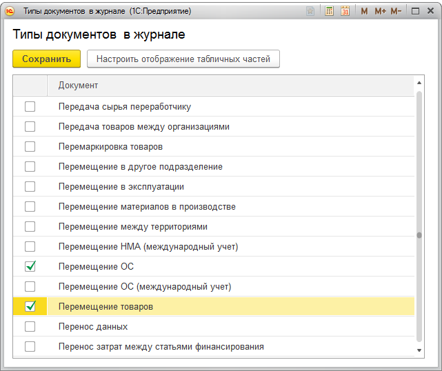
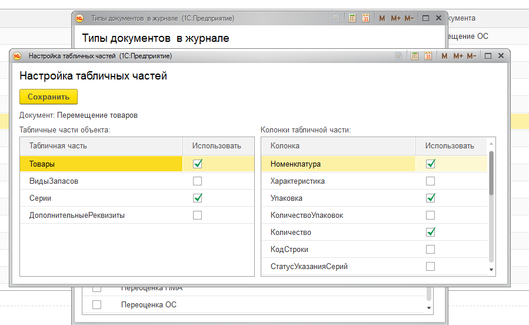
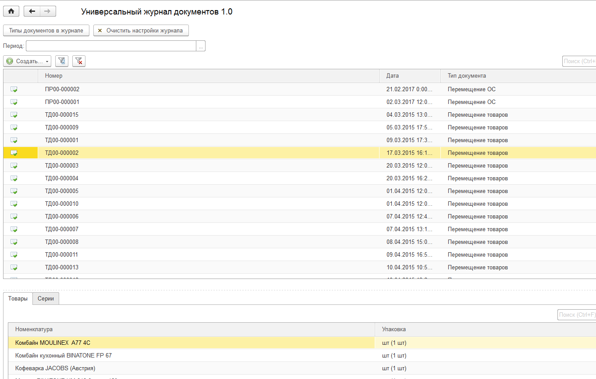
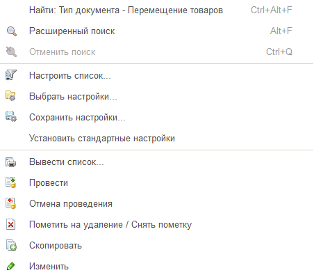
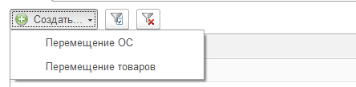
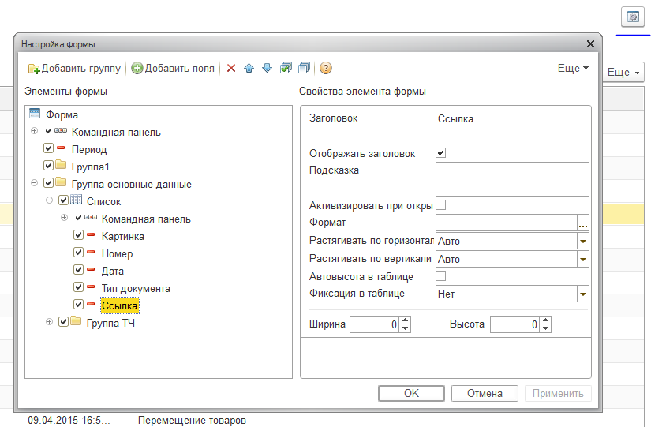
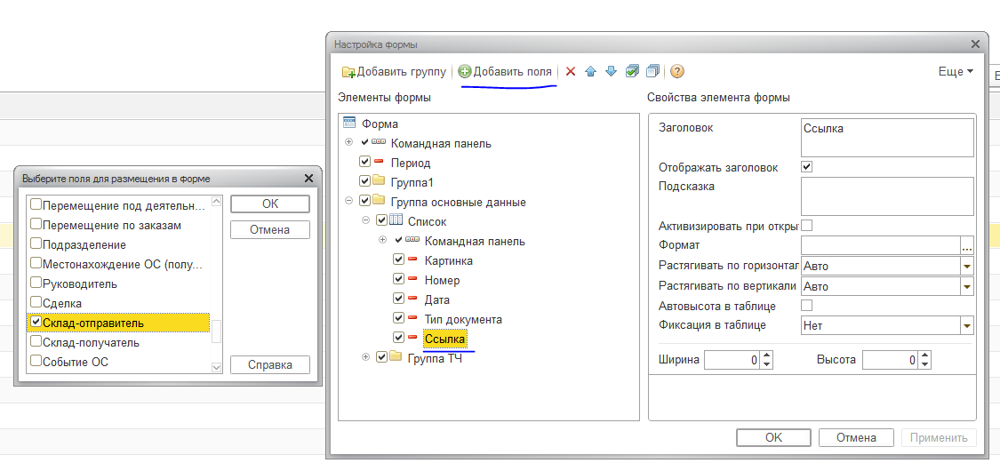
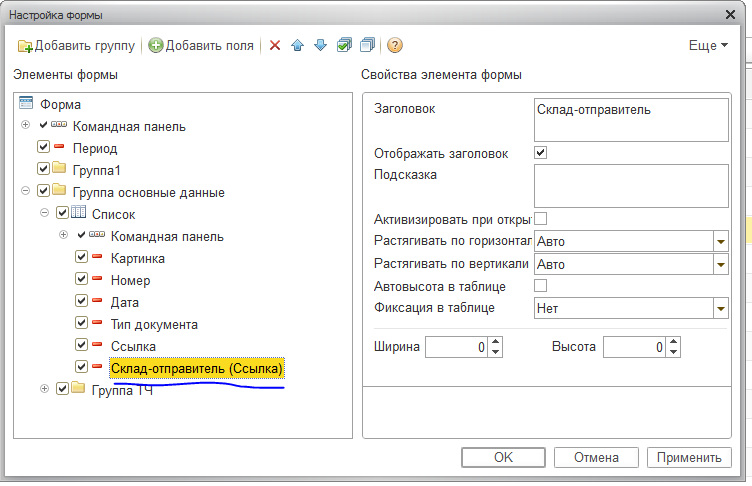

<!DOCTYPE html PUBLIC "-//W3C//DTD HTML 4.0 Transitional//EN"><html><head><meta content="text/html;charset=utf-8" http-equiv="content-type"></meta><meta name="ProgId" content="Word.Document"></meta><meta name="GENERATOR" content="MSHTML 11.00.10570.1001"></meta><meta name="Originator" content="Microsoft Word 14"></meta><link rel="File-List" href="Справка.mht.files/filelist.xml"></link><link rel="themeData" href="Справка.mht.files/themedata.thmx"></link><link rel="colorSchemeMapping" href="Справка.mht.files/colorschememapping.xml"></link><style>@font-face {
	font-family: Calibri;
}
@page WordSection1 {size: 595.3pt 841.9pt; margin: 2.0cm 42.5pt 2.0cm 3.0cm; mso-header-margin: 35.4pt; mso-footer-margin: 35.4pt; mso-paper-source: 0; }
P.MsoNormal {
	FONT-SIZE: 11pt; FONT-FAMILY: "Calibri","sans-serif"; MARGIN: 0cm 0cm 10pt; LINE-HEIGHT: 115%; mso-style-unhide: no; mso-style-qformat: yes; mso-style-parent: ""; mso-pagination: widow-orphan; mso-ascii-font-family: Calibri; mso-ascii-theme-font: minor-latin; mso-fareast-font-family: Calibri; mso-fareast-theme-font: minor-latin; mso-hansi-font-family: Calibri; mso-hansi-theme-font: minor-latin; mso-bidi-font-family: "Times New Roman"; mso-bidi-theme-font: minor-bidi; mso-fareast-language: EN-US
}
LI.MsoNormal {
	FONT-SIZE: 11pt; FONT-FAMILY: "Calibri","sans-serif"; MARGIN: 0cm 0cm 10pt; LINE-HEIGHT: 115%; mso-style-unhide: no; mso-style-qformat: yes; mso-style-parent: ""; mso-pagination: widow-orphan; mso-ascii-font-family: Calibri; mso-ascii-theme-font: minor-latin; mso-fareast-font-family: Calibri; mso-fareast-theme-font: minor-latin; mso-hansi-font-family: Calibri; mso-hansi-theme-font: minor-latin; mso-bidi-font-family: "Times New Roman"; mso-bidi-theme-font: minor-bidi; mso-fareast-language: EN-US
}
DIV.MsoNormal {
	FONT-SIZE: 11pt; FONT-FAMILY: "Calibri","sans-serif"; MARGIN: 0cm 0cm 10pt; LINE-HEIGHT: 115%; mso-style-unhide: no; mso-style-qformat: yes; mso-style-parent: ""; mso-pagination: widow-orphan; mso-ascii-font-family: Calibri; mso-ascii-theme-font: minor-latin; mso-fareast-font-family: Calibri; mso-fareast-theme-font: minor-latin; mso-hansi-font-family: Calibri; mso-hansi-theme-font: minor-latin; mso-bidi-font-family: "Times New Roman"; mso-bidi-theme-font: minor-bidi; mso-fareast-language: EN-US
}
P.MsoListParagraph {
	FONT-SIZE: 11pt; FONT-FAMILY: "Calibri","sans-serif"; MARGIN: 0cm 0cm 10pt 36pt; LINE-HEIGHT: 115%; mso-style-unhide: no; mso-style-qformat: yes; mso-pagination: widow-orphan; mso-ascii-font-family: Calibri; mso-ascii-theme-font: minor-latin; mso-fareast-font-family: Calibri; mso-fareast-theme-font: minor-latin; mso-hansi-font-family: Calibri; mso-hansi-theme-font: minor-latin; mso-bidi-font-family: "Times New Roman"; mso-bidi-theme-font: minor-bidi; mso-fareast-language: EN-US; mso-style-priority: 34; mso-add-space: auto
}
LI.MsoListParagraph {
	FONT-SIZE: 11pt; FONT-FAMILY: "Calibri","sans-serif"; MARGIN: 0cm 0cm 10pt 36pt; LINE-HEIGHT: 115%; mso-style-unhide: no; mso-style-qformat: yes; mso-pagination: widow-orphan; mso-ascii-font-family: Calibri; mso-ascii-theme-font: minor-latin; mso-fareast-font-family: Calibri; mso-fareast-theme-font: minor-latin; mso-hansi-font-family: Calibri; mso-hansi-theme-font: minor-latin; mso-bidi-font-family: "Times New Roman"; mso-bidi-theme-font: minor-bidi; mso-fareast-language: EN-US; mso-style-priority: 34; mso-add-space: auto
}
DIV.MsoListParagraph {
	FONT-SIZE: 11pt; FONT-FAMILY: "Calibri","sans-serif"; MARGIN: 0cm 0cm 10pt 36pt; LINE-HEIGHT: 115%; mso-style-unhide: no; mso-style-qformat: yes; mso-pagination: widow-orphan; mso-ascii-font-family: Calibri; mso-ascii-theme-font: minor-latin; mso-fareast-font-family: Calibri; mso-fareast-theme-font: minor-latin; mso-hansi-font-family: Calibri; mso-hansi-theme-font: minor-latin; mso-bidi-font-family: "Times New Roman"; mso-bidi-theme-font: minor-bidi; mso-fareast-language: EN-US; mso-style-priority: 34; mso-add-space: auto
}
P.MsoListParagraphCxSpFirst {
	FONT-SIZE: 11pt; FONT-FAMILY: "Calibri","sans-serif"; MARGIN: 0cm 0cm 0pt 36pt; LINE-HEIGHT: 115%; mso-style-unhide: no; mso-style-qformat: yes; mso-pagination: widow-orphan; mso-ascii-font-family: Calibri; mso-ascii-theme-font: minor-latin; mso-fareast-font-family: Calibri; mso-fareast-theme-font: minor-latin; mso-hansi-font-family: Calibri; mso-hansi-theme-font: minor-latin; mso-bidi-font-family: "Times New Roman"; mso-bidi-theme-font: minor-bidi; mso-fareast-language: EN-US; mso-style-priority: 34; mso-add-space: auto; mso-style-type: export-only
}
LI.MsoListParagraphCxSpFirst {
	FONT-SIZE: 11pt; FONT-FAMILY: "Calibri","sans-serif"; MARGIN: 0cm 0cm 0pt 36pt; LINE-HEIGHT: 115%; mso-style-unhide: no; mso-style-qformat: yes; mso-pagination: widow-orphan; mso-ascii-font-family: Calibri; mso-ascii-theme-font: minor-latin; mso-fareast-font-family: Calibri; mso-fareast-theme-font: minor-latin; mso-hansi-font-family: Calibri; mso-hansi-theme-font: minor-latin; mso-bidi-font-family: "Times New Roman"; mso-bidi-theme-font: minor-bidi; mso-fareast-language: EN-US; mso-style-priority: 34; mso-add-space: auto; mso-style-type: export-only
}
DIV.MsoListParagraphCxSpFirst {
	FONT-SIZE: 11pt; FONT-FAMILY: "Calibri","sans-serif"; MARGIN: 0cm 0cm 0pt 36pt; LINE-HEIGHT: 115%; mso-style-unhide: no; mso-style-qformat: yes; mso-pagination: widow-orphan; mso-ascii-font-family: Calibri; mso-ascii-theme-font: minor-latin; mso-fareast-font-family: Calibri; mso-fareast-theme-font: minor-latin; mso-hansi-font-family: Calibri; mso-hansi-theme-font: minor-latin; mso-bidi-font-family: "Times New Roman"; mso-bidi-theme-font: minor-bidi; mso-fareast-language: EN-US; mso-style-priority: 34; mso-add-space: auto; mso-style-type: export-only
}
P.MsoListParagraphCxSpMiddle {
	FONT-SIZE: 11pt; FONT-FAMILY: "Calibri","sans-serif"; MARGIN: 0cm 0cm 0pt 36pt; LINE-HEIGHT: 115%; mso-style-unhide: no; mso-style-qformat: yes; mso-pagination: widow-orphan; mso-ascii-font-family: Calibri; mso-ascii-theme-font: minor-latin; mso-fareast-font-family: Calibri; mso-fareast-theme-font: minor-latin; mso-hansi-font-family: Calibri; mso-hansi-theme-font: minor-latin; mso-bidi-font-family: "Times New Roman"; mso-bidi-theme-font: minor-bidi; mso-fareast-language: EN-US; mso-style-priority: 34; mso-add-space: auto; mso-style-type: export-only
}
LI.MsoListParagraphCxSpMiddle {
	FONT-SIZE: 11pt; FONT-FAMILY: "Calibri","sans-serif"; MARGIN: 0cm 0cm 0pt 36pt; LINE-HEIGHT: 115%; mso-style-unhide: no; mso-style-qformat: yes; mso-pagination: widow-orphan; mso-ascii-font-family: Calibri; mso-ascii-theme-font: minor-latin; mso-fareast-font-family: Calibri; mso-fareast-theme-font: minor-latin; mso-hansi-font-family: Calibri; mso-hansi-theme-font: minor-latin; mso-bidi-font-family: "Times New Roman"; mso-bidi-theme-font: minor-bidi; mso-fareast-language: EN-US; mso-style-priority: 34; mso-add-space: auto; mso-style-type: export-only
}
DIV.MsoListParagraphCxSpMiddle {
	FONT-SIZE: 11pt; FONT-FAMILY: "Calibri","sans-serif"; MARGIN: 0cm 0cm 0pt 36pt; LINE-HEIGHT: 115%; mso-style-unhide: no; mso-style-qformat: yes; mso-pagination: widow-orphan; mso-ascii-font-family: Calibri; mso-ascii-theme-font: minor-latin; mso-fareast-font-family: Calibri; mso-fareast-theme-font: minor-latin; mso-hansi-font-family: Calibri; mso-hansi-theme-font: minor-latin; mso-bidi-font-family: "Times New Roman"; mso-bidi-theme-font: minor-bidi; mso-fareast-language: EN-US; mso-style-priority: 34; mso-add-space: auto; mso-style-type: export-only
}
P.MsoListParagraphCxSpLast {
	FONT-SIZE: 11pt; FONT-FAMILY: "Calibri","sans-serif"; MARGIN: 0cm 0cm 10pt 36pt; LINE-HEIGHT: 115%; mso-style-unhide: no; mso-style-qformat: yes; mso-pagination: widow-orphan; mso-ascii-font-family: Calibri; mso-ascii-theme-font: minor-latin; mso-fareast-font-family: Calibri; mso-fareast-theme-font: minor-latin; mso-hansi-font-family: Calibri; mso-hansi-theme-font: minor-latin; mso-bidi-font-family: "Times New Roman"; mso-bidi-theme-font: minor-bidi; mso-fareast-language: EN-US; mso-style-priority: 34; mso-add-space: auto; mso-style-type: export-only
}
LI.MsoListParagraphCxSpLast {
	FONT-SIZE: 11pt; FONT-FAMILY: "Calibri","sans-serif"; MARGIN: 0cm 0cm 10pt 36pt; LINE-HEIGHT: 115%; mso-style-unhide: no; mso-style-qformat: yes; mso-pagination: widow-orphan; mso-ascii-font-family: Calibri; mso-ascii-theme-font: minor-latin; mso-fareast-font-family: Calibri; mso-fareast-theme-font: minor-latin; mso-hansi-font-family: Calibri; mso-hansi-theme-font: minor-latin; mso-bidi-font-family: "Times New Roman"; mso-bidi-theme-font: minor-bidi; mso-fareast-language: EN-US; mso-style-priority: 34; mso-add-space: auto; mso-style-type: export-only
}
DIV.MsoListParagraphCxSpLast {
	FONT-SIZE: 11pt; FONT-FAMILY: "Calibri","sans-serif"; MARGIN: 0cm 0cm 10pt 36pt; LINE-HEIGHT: 115%; mso-style-unhide: no; mso-style-qformat: yes; mso-pagination: widow-orphan; mso-ascii-font-family: Calibri; mso-ascii-theme-font: minor-latin; mso-fareast-font-family: Calibri; mso-fareast-theme-font: minor-latin; mso-hansi-font-family: Calibri; mso-hansi-theme-font: minor-latin; mso-bidi-font-family: "Times New Roman"; mso-bidi-theme-font: minor-bidi; mso-fareast-language: EN-US; mso-style-priority: 34; mso-add-space: auto; mso-style-type: export-only
}
.MsoChpDefault {
	FONT-SIZE: 10pt; FONT-FAMILY: "Calibri","sans-serif"; mso-ascii-font-family: Calibri; mso-ascii-theme-font: minor-latin; mso-fareast-font-family: Calibri; mso-fareast-theme-font: minor-latin; mso-hansi-font-family: Calibri; mso-hansi-theme-font: minor-latin; mso-bidi-font-family: "Times New Roman"; mso-bidi-theme-font: minor-bidi; mso-fareast-language: EN-US; mso-style-type: export-only; mso-default-props: yes; mso-ansi-font-size: 10.0pt; mso-bidi-font-size: 10.0pt
}
DIV.WordSection1 {
	page: WordSection1
}
OL {
	MARGIN-BOTTOM: 0cm
}
UL {
	MARGIN-BOTTOM: 0cm
}
</style></head><body lang="RU" style="tab-interval: 35.4pt">
<blockquote style="MARGIN-RIGHT: 0px" dir="ltr">
<p class="MsoNormal"><b style="mso-bidi-font-weight: normal"><span style="FONT-SIZE: 14pt; LINE-HEIGHT: 115%">Как работать с журналом<o:p></o:p></span></b></p>
<p class="MsoListParagraphCxSpFirst" style="TEXT-INDENT: -18pt; mso-list: l0 level1 lfo2"><span style="mso-bidi-font-family: Calibri; mso-bidi-theme-font: minor-latin"><span style="mso-list: Ignore">1.<span style="FONT: 7pt &quot;Times New Roman&quot;">       </span></span></span>Нажмите на кнопку <i style="mso-bidi-font-style: normal">Типы документов в журнале</i>. И выберите необходимые вам типы документов </p>
<p class="MsoListParagraphCxSpFirst" style="TEXT-INDENT: -18pt; mso-list: l0 level1 lfo2" align="center"></img></p>
<p class="MsoListParagraphCxSpMiddle" style="TEXT-ALIGN: center" align="center">Рисунок 1</p>
<p class="MsoListParagraphCxSpMiddle" style="TEXT-INDENT: -18pt; mso-list: l0 level1 lfo2"><span style="mso-bidi-font-family: Calibri; mso-bidi-theme-font: minor-latin"><span style="mso-list: Ignore">2.<span style="FONT: 7pt &quot;Times New Roman&quot;">       </span></span></span>Для каждого типа документа можно настроить состав выводимых к нему табличных частей и состав реквизитов этих табличных частей. Для этого в списке типов документов необходимо выделить нужный тип документа и нажать кнопку <i style="mso-bidi-font-style: normal">Настроить отображение табличных частей</i>.</p>
<p class="MsoListParagraphCxSpMiddle" style="TEXT-INDENT: -18pt; mso-list: l0 level1 lfo2" align="center"></img></p>
<p class="MsoListParagraphCxSpLast" style="TEXT-ALIGN: center" align="center">Рисунок 2</p>
<p class="MsoNormal"><span style="mso-tab-count: 1">                </span>После окончания настройки нажмите кнопку <i style="mso-bidi-font-style: normal">Сохранить</i>.</p>
<p class="MsoNormal" style="MARGIN-LEFT: 35.4pt">Состав табличных частей можно не настраивать, тогда будет выведена первая табличная часть документа со всеми реквизитами. </p>
<p class="MsoNormal" style="MARGIN-LEFT: 35.25pt">Если для документа выбрано несколько табличных частей, то они будут отображаться в отдельных вкладках.</p>
<p class="MsoNormal" style="MARGIN-LEFT: 35.25pt" align="center"></img></p>
<p class="MsoNormal" style="TEXT-ALIGN: center; MARGIN-LEFT: 35.25pt" align="center">Рисунок 3</p>
<p class="MsoNormal"><o:p> </o:p></p>
<p class="MsoNormal"><b style="mso-bidi-font-weight: normal"><span style="FONT-SIZE: 14pt; LINE-HEIGHT: 115%">Функции журнала<o:p></o:p></span></b></p>
<p class="MsoListParagraphCxSpFirst" style="TEXT-INDENT: -18pt; mso-list: l1 level1 lfo4"><span style="mso-bidi-font-family: Calibri; mso-bidi-theme-font: minor-latin"><span style="mso-list: Ignore">1.<span style="FONT: 7pt &quot;Times New Roman&quot;">       </span></span></span>Функции группового проведения, отмены проведения, пометки удаления и снятия пометки удаления доступны в контекстном меню и меню <i style="mso-bidi-font-style: normal">Еще</i>.</p>
<p class="MsoListParagraphCxSpFirst" style="TEXT-INDENT: -18pt; mso-list: l1 level1 lfo4" align="center"></img></p>
<p class="MsoListParagraphCxSpMiddle" style="TEXT-ALIGN: center" align="center">Рисунок 4</p>
<p class="MsoListParagraphCxSpMiddle" style="TEXT-INDENT: -18pt; mso-list: l1 level1 lfo4"><span style="mso-bidi-font-family: Calibri; mso-bidi-theme-font: minor-latin"><span style="mso-list: Ignore">2.<span style="FONT: 7pt &quot;Times New Roman&quot;">       </span></span></span>Функция копирования документов доступны в контекстном меню и меню <i style="mso-bidi-font-style: normal">Еще.</i></p>
<p class="MsoListParagraphCxSpMiddle" style="TEXT-INDENT: -18pt; mso-list: l1 level1 lfo4"><span style="mso-bidi-font-family: Calibri; mso-bidi-theme-font: minor-latin"><span style="mso-list: Ignore">3.<span style="FONT: 7pt &quot;Times New Roman&quot;">       </span></span></span>Функция просмотра документов доступны в контекстном меню и меню <i style="mso-bidi-font-style: normal">Еще. </i>А также по двойному клику в списке.</p>
<p class="MsoListParagraphCxSpMiddle" style="TEXT-INDENT: -18pt; mso-list: l1 level1 lfo4"><span style="mso-bidi-font-family: Calibri; mso-bidi-theme-font: minor-latin"><span style="mso-list: Ignore">4.<span style="FONT: 7pt &quot;Times New Roman&quot;">       </span></span></span>На каждый выбранный тип документа в списке доступна команда создания нового документа.</p>
<p class="MsoListParagraphCxSpMiddle" style="TEXT-INDENT: -18pt; mso-list: l1 level1 lfo4" align="center"></img></p>
<p class="MsoListParagraphCxSpMiddle" style="TEXT-ALIGN: center" align="center">Рисунок 5</p>
<p class="MsoListParagraphCxSpMiddle" style="TEXT-INDENT: -18pt; mso-list: l1 level1 lfo4"><span style="mso-bidi-font-family: Calibri; mso-bidi-theme-font: minor-latin"><span style="mso-list: Ignore">5.<span style="FONT: 7pt &quot;Times New Roman&quot;">       </span></span></span>Доступны функции быстрого отбора по значению в колонке и снятия отбора, а так же функции снятия<span style="mso-spacerun: yes">  </span>отбора. Так же доступна функция отбора по периоду.</p>
<p class="MsoListParagraphCxSpMiddle" style="TEXT-INDENT: -18pt; mso-list: l1 level1 lfo4"><span style="mso-bidi-font-family: Calibri; mso-bidi-theme-font: minor-latin"><span style="mso-list: Ignore">6.<span style="FONT: 7pt &quot;Times New Roman&quot;">       </span></span></span>Все реквизиты табличных частей кликабельны.</p>
<p class="MsoListParagraphCxSpMiddle" style="TEXT-INDENT: -18pt; mso-list: l1 level1 lfo4"><span style="mso-bidi-font-family: Calibri; mso-bidi-theme-font: minor-latin"><span style="mso-list: Ignore">7.<span style="FONT: 7pt &quot;Times New Roman&quot;">       </span></span></span>Обработка совместима с механизмом внешних отчетов и обработок БСП.</p>
<p class="MsoListParagraphCxSpLast" style="TEXT-INDENT: -18pt; mso-list: l1 level1 lfo4"><span style="mso-bidi-font-family: Calibri; mso-bidi-theme-font: minor-latin"><span style="mso-list: Ignore">8.<span style="FONT: 7pt &quot;Times New Roman&quot;">       </span></span></span>Выводить дополнительные реквизиты можно при помощи типовой функции Изменить форму</p>
<p class="MsoListParagraphCxSpLast" style="TEXT-INDENT: -18pt; mso-list: l1 level1 lfo4" align="center"></img></p>
<p class="MsoListParagraphCxSpLast" style="TEXT-INDENT: -18pt; mso-list: l1 level1 lfo4" align="center">Рисунок 6</p>
<p class="MsoListParagraphCxSpLast" style="TEXT-INDENT: -18pt; mso-list: l1 level1 lfo4" align="center"></img></p>
<p class="MsoListParagraphCxSpLast" style="TEXT-INDENT: -18pt; mso-list: l1 level1 lfo4" align="center">Рисуонк 7</p>
<p class="MsoListParagraphCxSpLast" style="TEXT-INDENT: -18pt; mso-list: l1 level1 lfo4" align="center"></img></p>
<p class="MsoListParagraphCxSpLast" style="TEXT-INDENT: -18pt; mso-list: l1 level1 lfo4" align="center">Рисуонк 8</p>
<p class="MsoListParagraphCxSpLast" style="TEXT-INDENT: -18pt; mso-list: l1 level1 lfo4" align="left">
</p><hr></hr><p></p>
<p class="MsoListParagraphCxSpLast" style="TEXT-INDENT: -18pt; mso-list: l1 level1 lfo4" align="left">По всем вопросам обращайтесь;</p>
<p class="MsoListParagraphCxSpLast" style="TEXT-INDENT: -18pt; mso-list: l1 level1 lfo4" align="left"><strong>Email: </strong><a href="mailto:gufinhaly@gmail.com">gufinhaly@gmail.com</a></p>
<p class="MsoListParagraphCxSpLast" style="TEXT-INDENT: -18pt; mso-list: l1 level1 lfo4" align="left">Дробышев Иван Сергеевич</p>
<p class="MsoListParagraphCxSpLast" style="TEXT-INDENT: -18pt; mso-list: l1 level1 lfo4" align="left"> </p></blockquote></body></html>